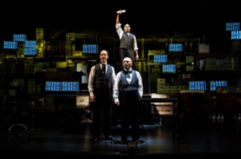
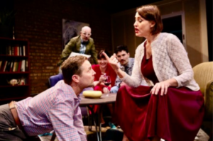
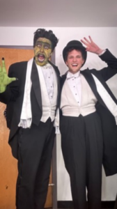

By Elizabeth Richter
We’ve all been there. The theater manager welcomes the audience to the play, then pauses and announces that the lead actor is indisposed and will be replaced by the understudy. Silence from the audience, or sometimes a quiet groan. But frequently, the play is terrific, with an accomplished and talented substitute. How does this happen? Being an understudy is much harder work than most of us realize.
When Timeline Director Nick Bowling called Peter Sipla late in the rehearsal schedule to join the team of The Lehman Trilogy, he warned Sipla that there would be a LOT of work to do. The role requires the actor to be on stage for virtually the play’s entire three-hour running time. Bowling, however, saw one benefit: “The most fun thing is you are seeing someone who will be so fresh in this role! They are going to put everything in their soul into this role.” Sipla would be understudying Anish Jethmalani, who played Emanuel Lehman, one of the three Lehman Brothers, who established the famed Lehman Brothers New York financial firm. Sipla had not auditioned for the play originally, but Bowling had worked with him before and felt comfortable calling him when another understudy dropped out just 12 days before the tech rehearsal. The other actors had had 6 months to learn their lines. Bowling knew that Sipla could handle it. His requirements for an understudy? “They have the ability to inhabit that character, and I trust them!”
Nick Bowling
Because of the pandemic and the resulting reduction in theater opportunities, Sipla had taken a day job in staffing and recruiting and was between theater gigs when Bowling called. His TV work was on hold because of the strike by the Screen Actors Guild. “My reaction was ok! I was very excited.” Sipla had worked with Bowling and TimeLine Theatre before. “It felt like an artistic home to me. I had a lot of logistics to work out with my day job and the teaching I was [also] doing.” Sipla had not read or seen the play but was aware of it. He accepted the understudy role sight unseen. Sipla reports that he might read a script 250 times!
Peter Sipla
Sipla also resonated with the play’s theme of immigration. His mother was third generation Chinese from Panama; his father was of Czech descent from central Wisconsin. Both parents were entertainers, his mother a tap-dancer and his father an actor and singer on the side. Joining the cast just before tech week, Sipla had understudy rehearsals set up in the Broadway Playhouse lobby. He was ready when Anish had to leave the show for a week. Sipla not only learned the show but juggled 10 performances with 30 hours a week in his day job.
“You don’t try to mimic an actor, but look for the essence,” observed Sipla. “The Lehman Trilogy” presented more than just a long script. “There’s a rhythm you have to be in, like a tennis match. There’s no time to think in this show!” Because of his film work where there is often no rehearsal at all, Sipla felt prepped for the challenge. He knew just few days in advance he’d be going on. He moved skillfully into the part.

“The Lehman Trilogy” with Anish Jethmalani (hand raised), Michell Fain and Joey Slotnick
Actors seek or accept understudy roles for many reasons; the money can be important. Shawna Franks points out the value of the regular paycheck. She is co-founder with Kirk Anderson of Facility Theater, a nonequity theater collective focusing on rarely seen and new plays. “We do a lot of weird plays,” she says. Having studied at the DePaul Theater School, she worked in LA and Phoenix, doing commercials as well as theater. A featured actor in the current Facility Theater production “Right Now,” Franks has “also been an understudy. She understands that the role is not for every actor. She notes that the regular pay and benefits are attractive, particularly at the large Equity theaters like Goodman and Steppenwolf with the highest pay for understudies. “Steppenwolf called me to cover for Steppenwolf Ensemble Mariann Mayberry in “Grand Concourse. “I knew I was needed at the beginning because she would have doctors’ appointments.” (Mayberry would retire after the run in 2015 and passed away from ovarian cancer in 2017) “I was honored to cover for her,” said Franks. “It was an amazing experience.”
Shawna Franks
Steppenwolf again chose Franks as understudy for the Miz Martha character in the production of “The Most Spectacularly Lamentable Trial of Miz Martha Washington.” Franks did not eventually ever go on as Miz Martha, but she appreciated the understudy role. “When there’s an understudy, the [regulars] want the understudy to do well. It’s important for [the understudies] to get what they need.” And she notes, the stage manager is “the understudy’s best friend…She guides the understudy through the rehearsal.”

Shawna Franks in “Right Now”
Franks had in this case auditioned for the understudy role, following the Covid pandemic. “Covid was like another character,” she recalled. The theater learned a painful lesson in this production when two actors came down with Covid, backed up by the same understudy. The theater had to shut down the production for two days. After that, there was a whole set of understudies for Covid safety. Everyone was tested daily. Bowling remembers similar experiences during Covid. Understudies were needed so often they were called “wonderstudies.” “We had to have an understudy for every role,” he recalled.
Frequently, understudies get a lesser role in a production in which they simultaneously understudy the major role for which they may have actually auditioned. Sam Shankman auditioned for the role of Dr. Frankenstein in the Mercury Theater production of “Young Frankenstein,” Mel Brooks’ musical version of his movie of the same name. Shankman was chosen for the lesser role of the Hermit but was given the slot of understudying Sean Fortunato as Dr. Frankenstein. “I just love Mel Brooks,” Shankman said, “he has a style I’ve always loved. We did “The Producers” in high school.” Shankman had been involved in theater since his parents sent him to theater camp. He moved to Chicago to study theater at Northwestern.
Sam Shankman
At Mercury, he attended not only the weekly understudy rehearsals, but also specific rehearsals for the Hermit role, and those for Dr. Frankenstein. “I’m a kinesthetic person. I have to get the part in my body,” he said. When Sean was ill, there was little notice. “You have to rip the Band-Aid off,” he said. “You have to find ways not to disrupt the very tight humor that’s been crafted and make it your own.” An ensemble member moved into the Hermit role when Shankman played Dr. Frankenstein.

Andrew McNaughton as the monster, Sam Shankman as Dr. Frankenstein
Having the freedom and the support to “make it your own” demands the support of the other actors and the director. Nick Bowling feels that support for understudies is critical. “I had understudied a show in college. The actors treated us like the enemy… 30 years ago…I’ve always wanted no understudy to feel that way. I want them to come to rehearsal a lot. Sometimes the actors feel a little threatened…it can get complicated.” Bowling tries to see at least one understudy rehearsal (run by the stage manager), knowing it’s important for understudies “to be seen.” He says most actors will be helpful…most have been understudies themselves. What audiences often fail to realize is how critical the role of the understudy is. They have to do as much work as the cast on stage and seldom get any credit. As Sipla put it, “It’s truly the lifeblood of the theater, to make sure the show goes on.”